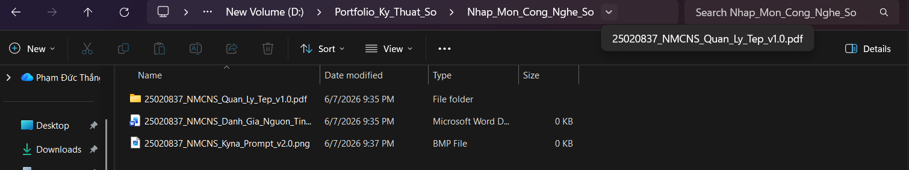
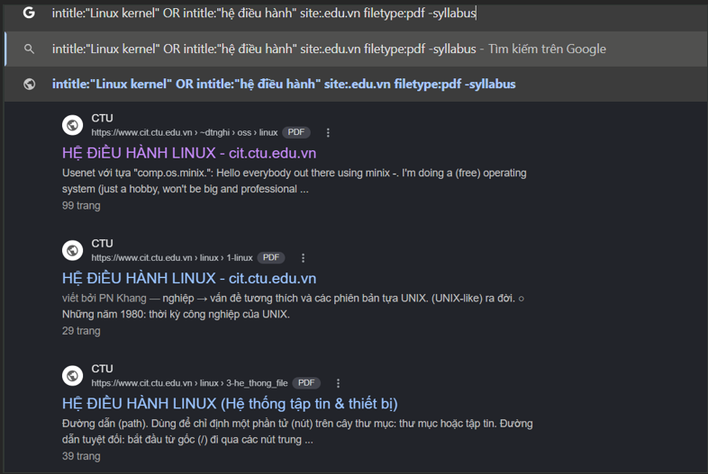
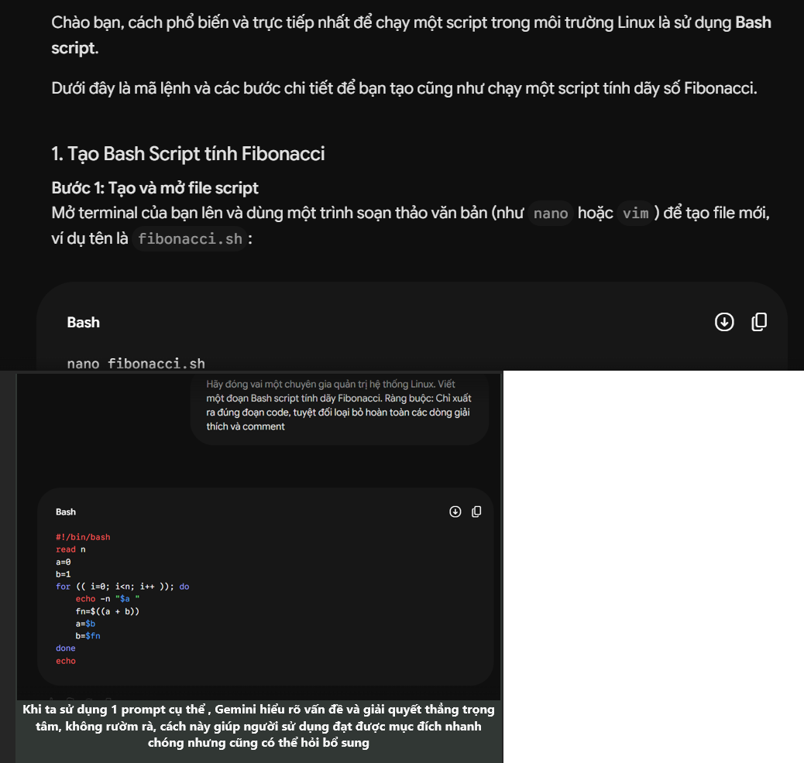
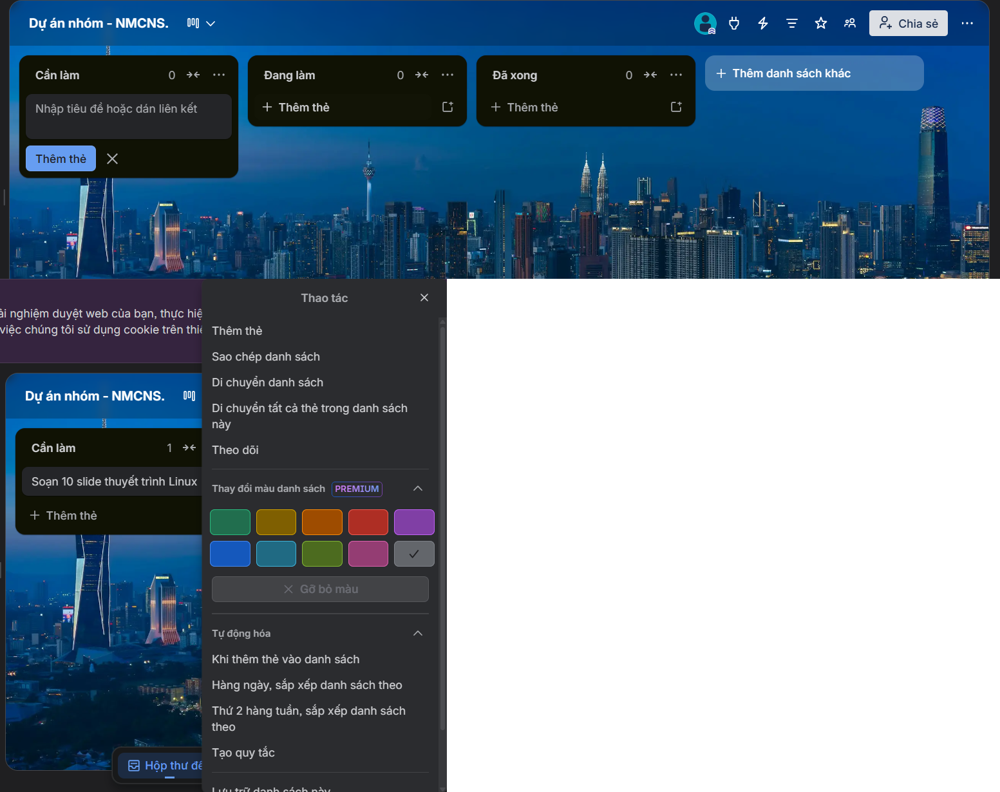

Tối ưu hóa trải nghiệm - Ứng dụng đa phương tiện
Họ và tên: Phạm Đức Thắng
Mã sinh viên: 25020837
Trường/Ngành học: Đại học Công nghệ (UET) - ĐHQGHN
Định hướng: Chuyên gia hệ thống, quản trị Linux và tối ưu hóa hạ tầng.
Mục tiêu Portfolio: Không chỉ dừng ở việc lưu trữ bài tập, Portfolio này được xây dựng với mục tiêu tích hợp thiết kế UI/UX độc đáo, cấu trúc điều hướng logic liền mạch (smooth scrolling) nhằm mang lại trải nghiệm tương tác tốt nhất cho người dùng.
Cấu trúc khoa học Naming Convention
Mô tả sâu sắc: Áp dụng tư duy quản trị hệ thống phân tầng (Hierarchical structure) tương tự Linux. Thiết lập quy tắc đặt tên tệp sáng tạo và đồng nhất: `YYYYMMDD_[Học_Phần]_[Tên_Dự_Án]_v1.0`. Sự chuẩn hóa này không chỉ giúp tổ chức dữ liệu gọn gàng mà còn là bước đệm thiết yếu để dễ dàng ứng dụng các script tự động hóa tìm kiếm/lọc file sau này.

Sử dụng >4 Toán tử Phân tích chuyên sâu
Chiến lược tìm kiếm: Ứng dụng linh hoạt và kết hợp đồng thời nhiều toán tử nâng cao: `site:.edu.vn`, `filetype:pdf`, `intitle:"..."`, và toán tử loại trừ `-`. Về mặt đánh giá, không chỉ dừng ở bề nổi mà còn phân tích chéo thông qua chỉ số trích dẫn (citations) trên Google Scholar, đảm bảo độ tin cậy tuyệt đối của nguồn dữ liệu học thuật.

Prompt Engineering So sánh cơ chế AI
Ứng dụng & Phân tích: Áp dụng thành thạo các kỹ thuật Prompt Engineering nâng cao như Role-playing và Chain-of-Thought (Tư duy theo chuỗi). Sự khác biệt rõ rệt được lý giải qua cơ chế hoạt động của AI: Prompt cơ bản khiến LLM sinh nội dung rác do không gian vector phân tán; trong khi Prompt cấu trúc hóa thu hẹp Attention Mechanism, ép model tập trung xuất ra kết quả có độ chính xác và logic cao nhất.

Tích hợp tính năng Tối ưu quy trình Workflow
Quy trình làm việc nhóm: Tối ưu hóa quy trình làm việc bằng cách tích hợp các tính năng nâng cao như automation (tự động hóa) trên Trello/GitHub. Thiết lập ma trận phân quyền rõ ràng, sử dụng Label, Due Date và Checklists chi tiết giúp theo dõi tracking tiến độ realtime, loại bỏ hoàn toàn các nút thắt (bottlenecks) trong giao tiếp dự án.

Đa phương tiện Liêm chính học thuật
Phân tích: Kết hợp Generative AI vào luồng sản xuất đa phương tiện nhưng duy trì sự kiểm duyệt khắt khe (Human-in-the-loop). Cam kết tuyệt đối với các nguyên tắc liêm chính học thuật, xác minh fact-checking chéo và trích dẫn minh bạch đối với mọi dữ liệu do AI khởi tạo.
Việc hoàn thiện Portfolio này không chỉ là một bài tập tổng hợp mà là quá trình "hệ thống hóa" lại tư duy công nghệ. Từ việc hiểu sâu cấu trúc file, làm chủ thuật toán tìm kiếm, đến việc điều khiển AI qua Prompt Engineering — tất cả tạo thành một chuỗi kỹ năng khép kín (Full-stack skillset) giúp tối ưu hóa hiệu suất nghiên cứu và sẵn sàng thích ứng với các hệ thống kỹ thuật phức tạp trong tương lai.